Guía completa para vender, cobrar, abrir y cerrar la caja, controlar descuadres, llevar la cartera de clientes y administrar el inventario, paso a paso.
Dirigido a: vendedores y administradores de la tienda
APEX — Sistema Integral de GestiónVersión 1.0 · Octubre 2026
Contenido
Introducción y roles
Ingreso al sistema
Pantalla principal y navegación
Dashboard
La caja: cómo funciona
Abrir la caja
Punto de Venta (POS)
Formas de pago
Ticket de venta
Cartera y abonos
Gastos e ingresos manuales
Cerrar la caja (arqueo)
Reporte de cierre en PDF
Descuadres: faltantes y sobrantes
Clientes
Proveedores
Inventario y categorías
Averiados y obsequios
Reportes
Usuarios y contraseñas
Backup de la base de datos
Configuración de la empresa
Mensajes y confirmaciones
Preguntas frecuentes
Sobre las imágenesLas pantallas de este manual se tomaron con datos de demostración (empresa «Tienda Demo», vendedora «Laura Gómez», administrador «Carlos Ramírez»). En tu sistema verás tus propios datos.
1.Introducción y roles
APEX es un sistema de punto de venta (POS) para tiendas de venta y reparación de dispositivos. Permite registrar ventas con distintas formas de pago, controlar la caja con apertura y cierre diario, detectar y hacer seguimiento a los descuadres de dinero, llevar la cartera de clientes que compran a crédito, administrar el inventario y exportar reportes.
Se usa desde el navegador (Edge, Chrome o Firefox), en computador, tableta o celular. Necesita conexión a internet para cargar los estilos y generar los PDF.
Roles de usuario
Cada persona ingresa con su propio usuario. Existen dos roles:
Módulo / acción
Vendedor
Administrador
Dashboard, Punto de Venta, Cartera (abonos), Clientes
Sí
Sí
Caja: abrir, ver el resumen, cerrar (arqueo) y ver/descargar reportes de cierre
Sí
Sí
Caja: registrar gastos e ingresos manuales, cuadrar descuadres, historial completo de movimientos
No
Sí
Proveedores, Inventario y categorías, Averiados / Obsequios
No
Sí
Reportes, Usuarios, Backup, Configuración
No
Sí
ConsejoCada vendedor debe tener su propio usuario. Así cada venta, abono, apertura y cierre de caja queda registrado a nombre de quien lo hizo, lo que facilita la auditoría.
2.Ingreso al sistema
Abre el navegador y entra a la dirección del sistema que te indicó el administrador (por ejemplo http://localhost/APEX).
Escribe tu usuario y tu contraseña.
Pulsa Iniciar Sesión. Entrarás al Dashboard.
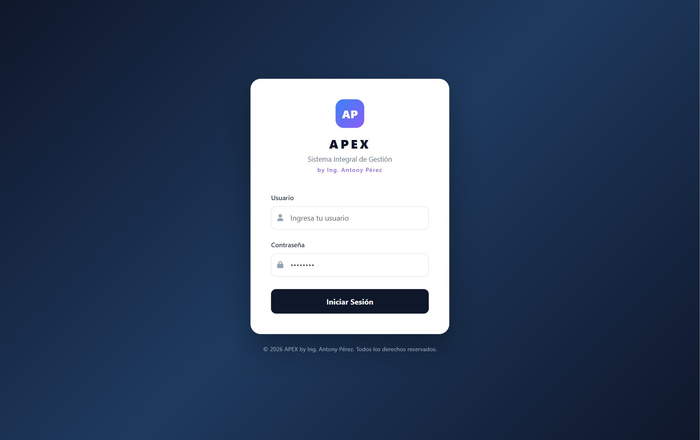
Pantalla de inicio de sesión
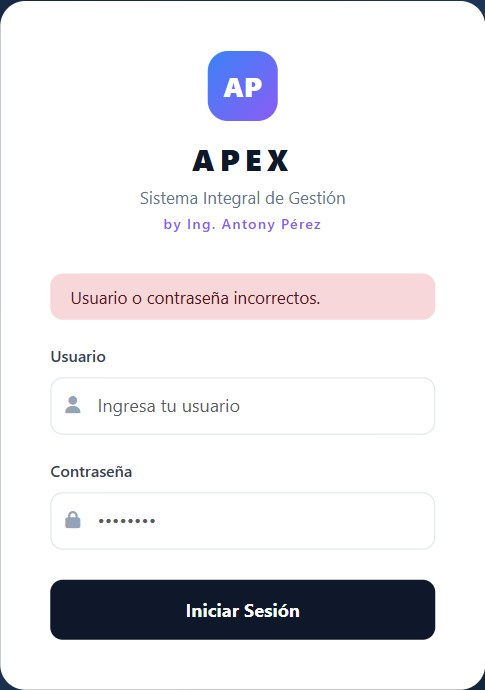
Usuario o contraseña incorrectos
Primer ingreso: cambio de contraseña
Si entras con la contraseña inicial que te dio el administrador (o la que trae el sistema al instalarse), APEX te pedirá cambiarla antes de dejarte usar cualquier módulo:
Escribe la contraseña actual.
Escribe la nueva dos veces: mínimo 8 caracteres, distinta a la actual, a la inicial y a tu usuario.
Pulsa Guardar contraseña.
En cualquier momento puedes cambiar tu contraseña con el ícono de llave que está junto a tu nombre, abajo en el menú.
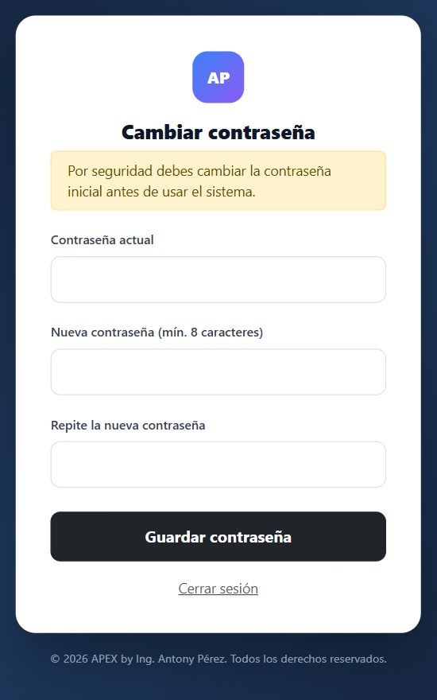
Cambio obligatorio de la contraseña inicial
Seguridad del acceso
Si los datos no son correctos aparece «Usuario o contraseña incorrectos». Por seguridad el sistema no dice cuál de los dos falló.
Tras 5 intentos fallidos desde el mismo equipo, el ingreso se bloquea durante 15 minutos.
Si dejas el sistema 8 horas sin usar, la sesión se cierra sola y verás «Tu sesión se cerró por inactividad».
Si al guardar un formulario aparece «Token de seguridad inválido», recarga la página (F5) e inténtalo de nuevo.
Cerrar sesión
Pulsa el ícono de salida junto a tu nombre (al lado de la llave), en la parte inferior del menú lateral. Cierra siempre la sesión si el computador es compartido.
ImportanteCerrar sesión no cierra la caja. La caja sigue abierta hasta que alguien la cierre desde el módulo Caja (capítulo 12).
3.Pantalla principal y navegación
La pantalla se divide en el menú lateral (izquierda), la barra superior con el nombre de la sección y el reloj, el área de trabajo y, al final, el pie con los derechos de autor.
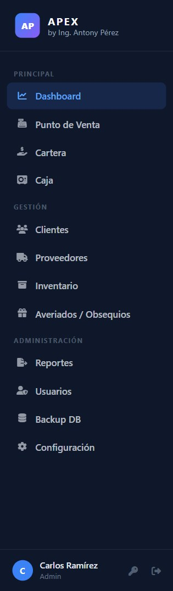
Menú del administrador
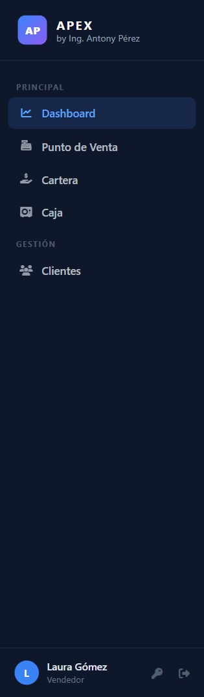
Menú del vendedor
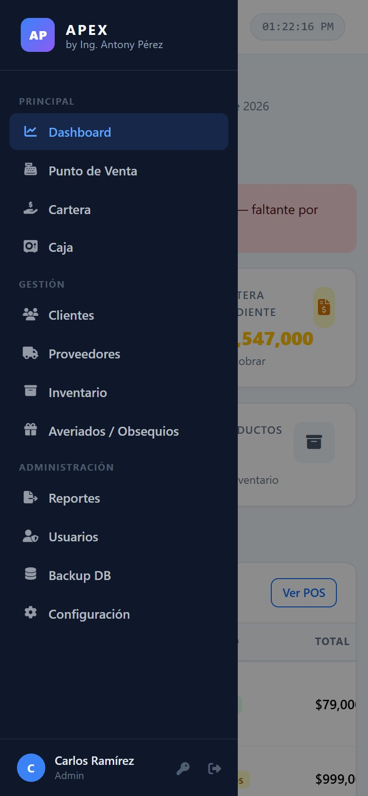
En el celular el menú se abre con el botón ☰
4.Dashboard
Es la pantalla de inicio. Resume la operación del día:
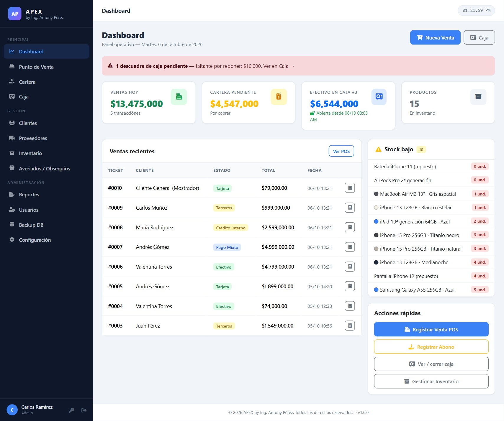
Dashboard del administrador
Elemento
Qué muestra
Aviso rojo de descuadres
Aparece si hay cierres de caja con faltante o sobrante sin cuadrar. Lleva al módulo Caja.
Ventas hoy
Suma de las ventas del día y número de transacciones.
Cartera pendiente
Total que deben los clientes (crédito interno y terceros con saldo).
Efectivo en caja
Si la caja está abierta: el efectivo que debería haber en el cajón. Si está cerrada: «Cerrada» con el enlace para abrirla.
Productos
Cantidad de productos registrados.
Ventas recientes
Las últimas 8 ventas; el botón de la derecha abre el ticket.
Stock bajo
Productos con 5 unidades o menos.
Acciones rápidas
Accesos directos a vender, abonar, abrir/cerrar caja e inventario.
5.La caja: cómo funciona
La caja es el centro del control del dinero. Funciona como un turno: se abre al empezar la jornada y se cierra al terminarla, y todo el dinero que se mueve entre esos dos momentos queda asociado a esa caja.
Apertura: se abre con la base en efectivo, el sencillo que hay en el cajón. Sin caja abierta no se pueden registrar ventas ni abonos.
Durante la jornada: cada venta, abono, gasto e ingreso queda ligado a la caja abierta. Efectivo, transferencia y tarjeta son dinero recibido. Terceros (Addi, Sistecrédito…) y Crédito Interno no son dinero recibido: quedan en Cartera hasta que se cobren.
La caja nunca se cierra sola: sigue abierta aunque cambie el día, se apague el computador o se cierre la sesión.
Cierre (arqueo): se cuenta el efectivo del cajón y se escribe. El sistema lo compara con el efectivo esperado y muestra si la caja está cuadrada, si hay faltante o si hay sobrante.
Reporte: al cerrar se genera un reporte detallado que se descarga en PDF.
Descuadres: si hubo faltante o sobrante, queda registrado como pendiente con su fecha hasta que el administrador lo cuadre.
Efectivo esperado = Base inicial + Ventas en efectivo + Abonos en efectivo + Ingresos en efectivo − Gastos en efectivo
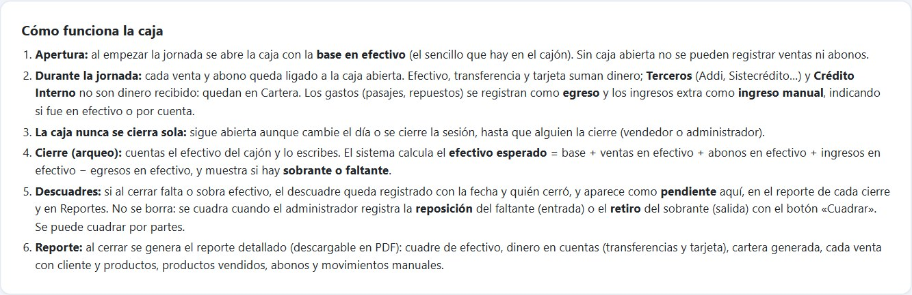
El botón «¿Cómo funciona?» del módulo Caja muestra este mismo resumen
6.Abrir la caja
Lo puede hacer el vendedor o el administrador, desde dos lugares:
Desde el módulo Caja
Entra a Caja en el menú.
En Base inicial en efectivo escribe cuánto dinero hay en el cajón al empezar.
Opcionalmente escribe una observación y pulsa Abrir Caja.
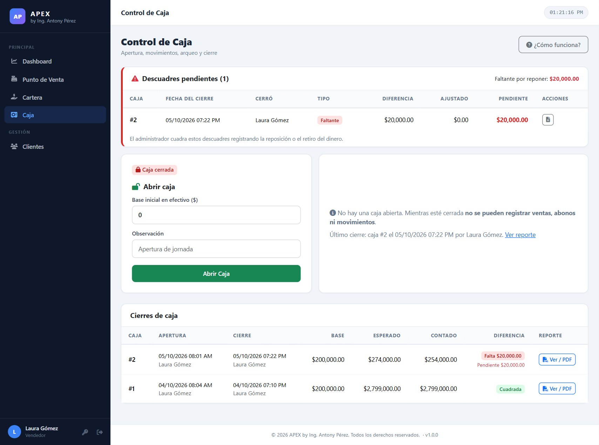
Caja cerrada: formulario de apertura, descuadres pendientes y cierres anteriores
Desde el Punto de Venta
Si intentas vender con la caja cerrada, el Punto de Venta muestra un aviso rojo con el mismo formulario de apertura y el botón Cobrar queda deshabilitado.
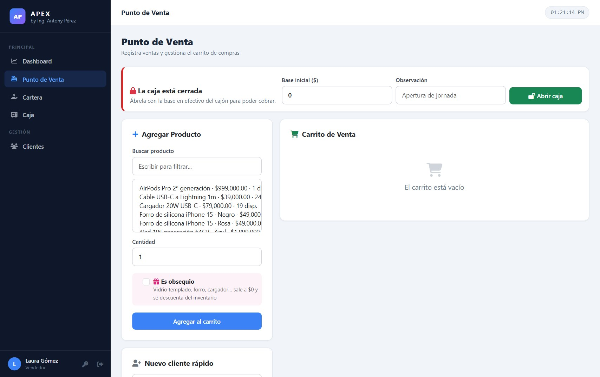
Punto de Venta con la caja cerrada
Solo una caja a la vezNo se puede abrir una caja si ya hay otra abierta: primero hay que cerrarla.
7.Punto de Venta (POS)
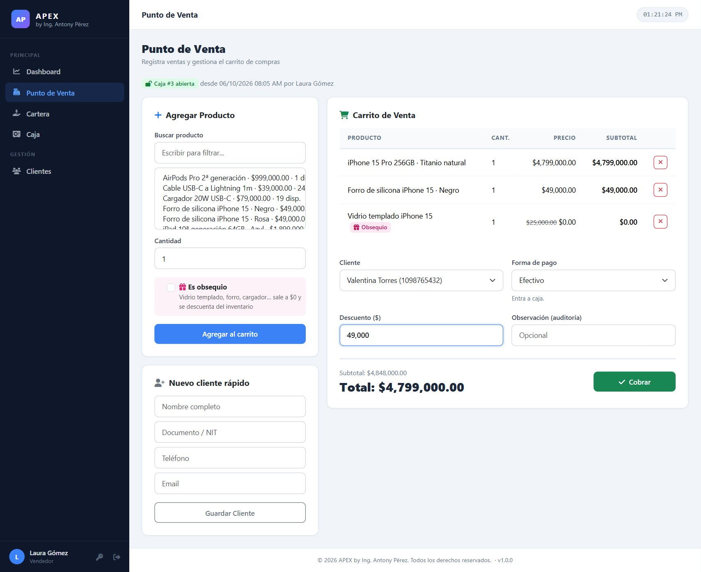
Punto de Venta con productos en el carrito, un obsequio y un descuento
Registrar una venta
En Agregar Producto, escribe parte del nombre en Buscar producto para filtrar la lista.
Selecciona el producto. La lista muestra el color, el precio y las unidades disponibles.
Indica la Cantidad y pulsa Agregar al carrito. Repite para cada producto.
Elige el Cliente. Para ventas de mostrador usa Cliente General (Mostrador). Si es nuevo, regístralo en Nuevo cliente rápido.
Elige la Forma de pago (capítulo 8).
Si aplica, escribe un Descuento; el total se recalcula al instante.
Pulsa Cobrar. Aparece la confirmación con el botón para imprimir el ticket.
Obsequios
Para regalar un producto con la venta (vidrio templado, forro, cargador…) marca Es obsequio antes de agregarlo. Sale a $0, se descuenta del inventario y queda registrado en Averiados / Obsequios.
Quitar productos
El botón ✕ de cada fila quita el producto del carrito (pide confirmación). El carrito no afecta el inventario hasta que se cobra.
StockEl sistema no permite vender más unidades de las que hay. Si dos personas venden el último producto al mismo tiempo, solo una venta se registra y la otra recibe el aviso «Stock insuficiente».
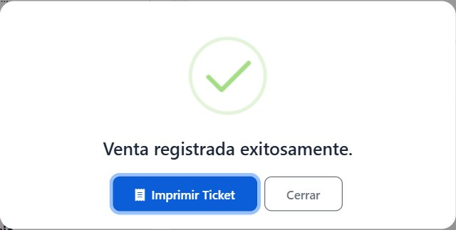
Venta registrada: opción de imprimir el ticket
8.Formas de pago
Forma de pago
¿Entra a caja?
Qué pasa
Efectivo
Sí (efectivo)
Suma al efectivo esperado del cajón.
Transferencia
Sí (cuenta)
Dinero en la cuenta bancaria (Nequi, Bancolombia…).
Tarjeta (datáfono)
Sí (cuenta)
Dinero que llega por el datáfono.
Terceros
No
La paga una entidad (Addi, Sistecrédito u otra). Queda en Cartera hasta que la entidad consigne.
Crédito Interno
No
El cliente queda debiendo a la tienda. Queda en Cartera a su nombre.
Pago Mixto
Según cada parte
El total se reparte entre varios métodos.
Pago mixto
Elige Pago Mixto, escribe el monto de cada método y usa + Agregar método para más filas. La suma debe ser igual al total.
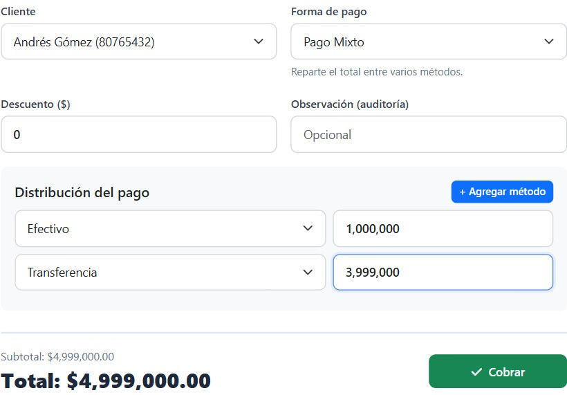
Pago mixto: efectivo + transferencia
Terceros
Elige la Entidad (Addi, Sistecrédito u «Otra» escribiendo su nombre) y, si la tienes, la referencia de aprobación.
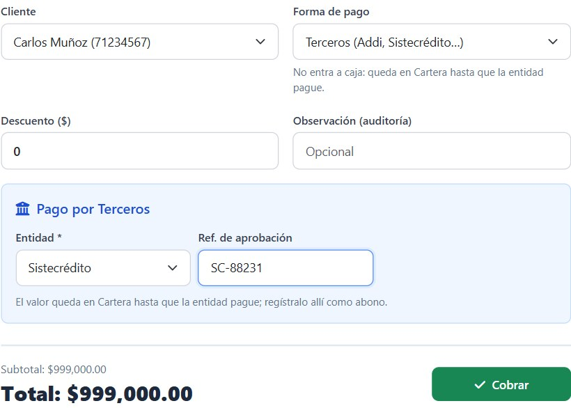
Venta con Terceros
Crédito Interno
Debe quedar a nombre de un cliente registrado (no de Cliente General) e indicar quién autoriza el crédito.
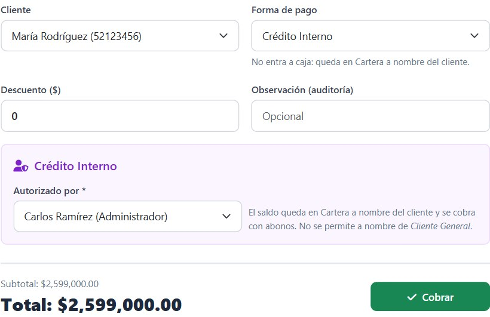
Venta a Crédito Interno con quien autoriza
9.Ticket de venta
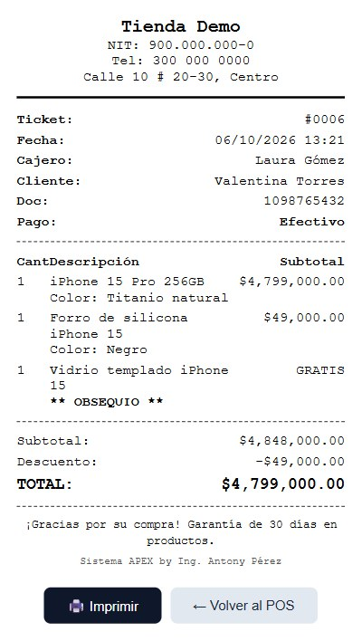
Ticket para impresora térmica de 80 mm
Después de cobrar pulsa Imprimir Ticket. También puedes abrir el ticket de cualquier venta desde el Dashboard (Ventas recientes).
El ticket muestra los datos de la empresa (se configuran en Configuración), el número de ticket, la fecha, el cajero, el cliente, la forma de pago con su desglose, los productos con su color, los obsequios marcados como GRATIS, el descuento, el total, el saldo pendiente si lo hay y el mensaje del pie.
Pulsa Imprimir y elige la impresora térmica, o «Guardar como PDF».
10.Cartera y abonos
La Cartera reúne todas las ventas con saldo pendiente: Crédito Interno, Terceros y la parte a crédito de los pagos mixtos.
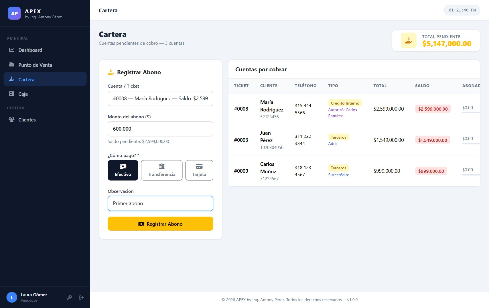
Cartera: registrar un abono y lista de cuentas por cobrar
Registrar un abono
La caja debe estar abierta (el abono es dinero que entra).
En Registrar Abono elige la cuenta (ticket y cliente). Se muestra el saldo pendiente.
Escribe el monto; no puede superar el saldo.
Elige cómo se recibió: Efectivo, Transferencia o Tarjeta.
Opcionalmente agrega una observación (por ejemplo «Nequi ref. 12345» o «pagó Addi») y pulsa Registrar Abono.
Cuando el saldo llega a cero la cuenta queda saldada y sale de la lista. El botón de historial de cada cuenta muestra todos sus abonos.
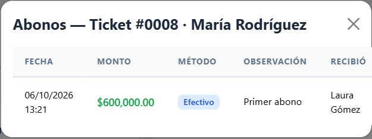
Historial de abonos de una cuenta
TercerosCuando Addi o Sistecrédito consignen a la tienda, registra ese pago como un abono por Transferencia a la venta correspondiente.
11.Gastos e ingresos manuales (administrador)
Todo dinero que sale o entra a la caja por fuera de ventas y abonos debe registrarse; si no, el cierre mostrará un descuadre.
Egreso / Gasto: pasajes, compra de repuestos, pago de servicios, retiro del dueño… Indica el monto, de dónde sale (efectivo, cuenta o tarjeta) y una descripción clara.
Ingreso manual: dinero que entra por otro motivo (consignación, adelanto…).
Muy importanteSi el dueño o un empleado saca efectivo del cajón, debe registrarse como Egreso antes de cerrar. Si no se registra, al cerrar aparecerá como faltante.
Los vendedores no ven estos formularios: si hubo un gasto en efectivo durante el día, deben pedir al administrador que lo registre antes del cierre.
12.Cerrar la caja (arqueo)
Al final de la jornada, el vendedor o el administrador cierra la caja comparando el dinero real con lo registrado.
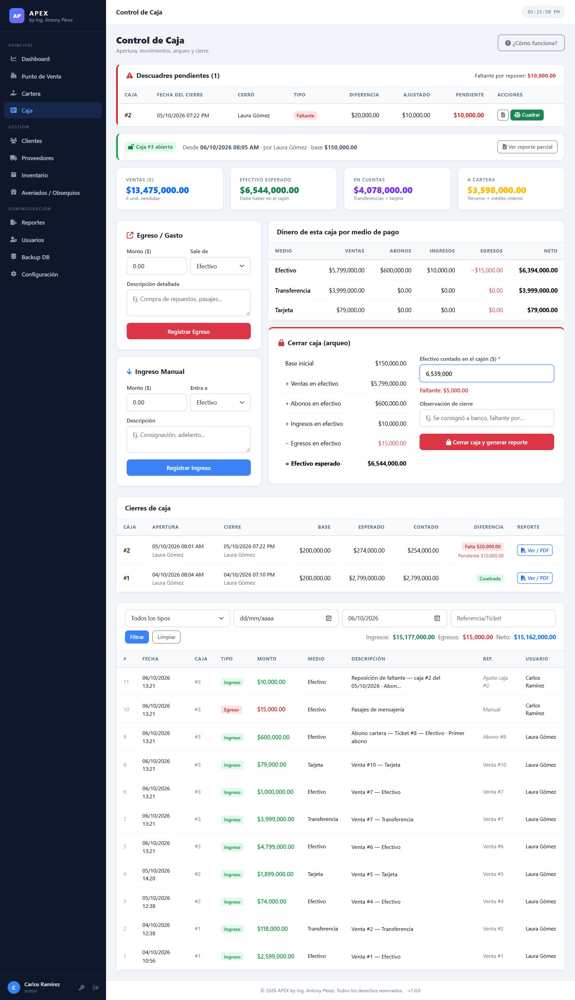
Caja abierta: resumen, dinero por medio de pago, gastos y cierre
Entra a Caja. Revisa los indicadores: ventas, efectivo esperado, dinero en cuentas y lo que se fue a cartera.
En Dinero de esta caja por medio de pago compara las transferencias con la app del banco y la tarjeta con el cierre del datáfono.
Cuenta el efectivo del cajón y escríbelo en Efectivo contado en el cajón. Al instante verás «✔ Caja cuadrada», «Sobrante: $…» o «Faltante: $…».
Si hay diferencia, explica el motivo en Observación de cierre.
Pulsa Cerrar caja y generar reporte y confirma. Se abre el reporte y se descarga el PDF.
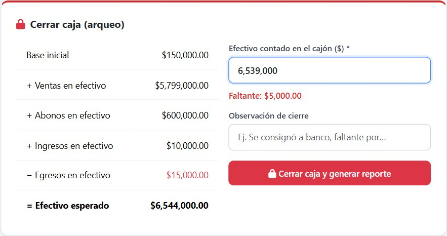
Arqueo: el sistema calcula la diferencia mientras escribes
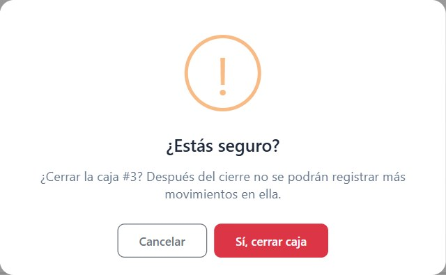
Confirmación antes de cerrar
Después del cierreLa caja cerrada ya no admite movimientos. Para seguir vendiendo hay que abrir una nueva caja.
13.Reporte de cierre en PDF
Al cerrar la caja se abre el reporte y se descarga automáticamente en PDF (archivo Cierre_caja_0002_2026-10-05.pdf). También puedes verlo en cualquier momento desde Cierres de caja → Ver / PDF, y mientras la caja está abierta con Ver reporte parcial.
El reporte incluye:
Encabezado: empresa, número de caja, apertura y cierre (fecha, hora y usuario), base inicial.
Indicadores: total vendido, efectivo en cajón, dinero en cuentas y lo enviado a cartera.
Cuadre de efectivo: el cálculo completo del efectivo esperado, lo contado, la diferencia y el estado del descuadre.
Dinero recibido por medio: entradas y salidas de efectivo, transferencia y tarjeta.
Ventas por forma de pago (con el desglose por entidad de Terceros), subtotal y descuentos.
Productos vendidos consolidados, con obsequios.
Detalle de cada venta: ticket, hora, vendedor, cliente con documento, productos, forma de pago y total.
Abonos recibidos y gastos e ingresos manuales.
Descuadre de esta caja y sus ajustes, y los descuadres pendientes de otras cajas.
Observaciones y espacio para firmas (entrega / recibe).
Botones: Descargar PDF, Imprimir y Volver a Caja.
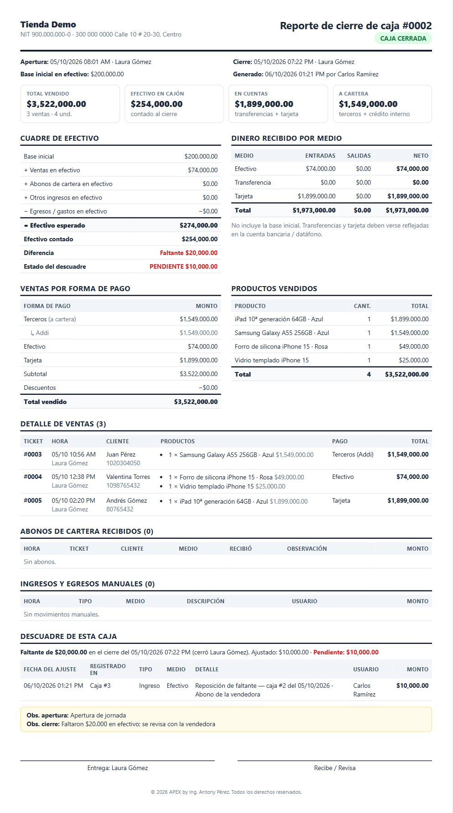
Reporte de un cierre con faltante parcialmente cuadrado
14.Descuadres: faltantes y sobrantes
Cuando el efectivo contado no coincide con el esperado, el cierre queda con un descuadre:
Faltante: hay menos dinero del esperado.
Sobrante: hay más dinero del esperado.
El descuadre no se borra: queda registrado con la fecha del cierre, quién cerró y la observación, y aparece como pendiente en el Dashboard, en Caja, en Reportes y en el PDF de cada cierre posterior, hasta que se cuadre.
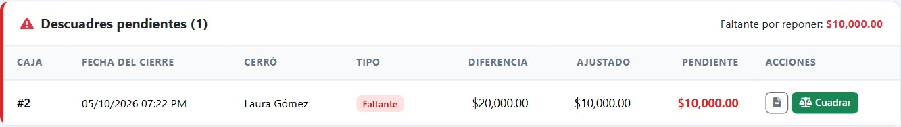
Descuadres pendientes en el módulo Caja
Cuadrar un descuadre (administrador)
Debe haber una caja abierta: el dinero de la reposición entra a ella (o el sobrante sale de ella).
En Descuadres pendientes pulsa Cuadrar en la fila correspondiente.
Escribe el monto. Puede ser todo lo pendiente o solo una parte: el resto seguirá pendiente.
Elige por dónde entra o sale el dinero y agrega un detalle (por ejemplo «Lo repuso la vendedora»).
Pulsa Registrar ajuste.
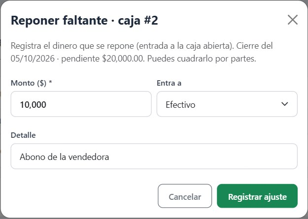
Reponer un faltante (abono parcial)
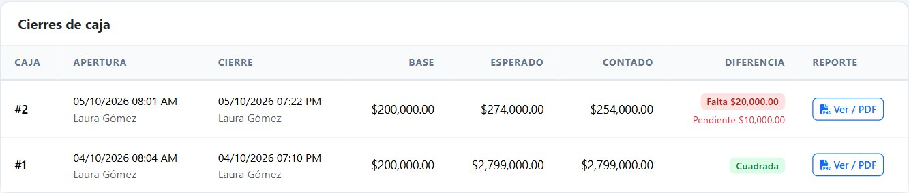
En los cierres se ve el estado de cada descuadre
Un faltante se cuadra con una entrada (reposición del dinero); un sobrante con una salida (retiro). Cuando los ajustes cubren la diferencia, el descuadre pasa a Cuadrado con la fecha en que se completó.
15.Clientes
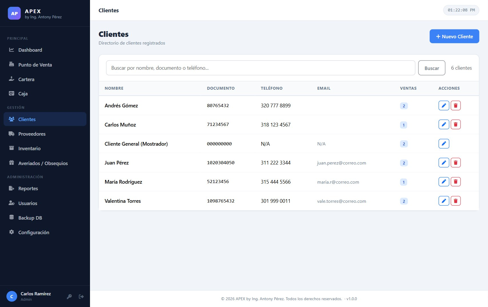
Directorio de clientes
Nuevo Cliente: nombre y documento son obligatorios; el documento no se puede repetir.
Busca por nombre, documento o teléfono. El lápiz edita los datos.
No se puede eliminar un cliente con ventas, ni el Cliente General (Mostrador).
16.Proveedores (administrador)
Registra a quién le compras. El campo Observación / qué suministra deja claro qué provee cada uno (vidrios, repuestos, equipos…) y se muestra en la lista y al lado del nombre al elegir el proveedor de un producto.
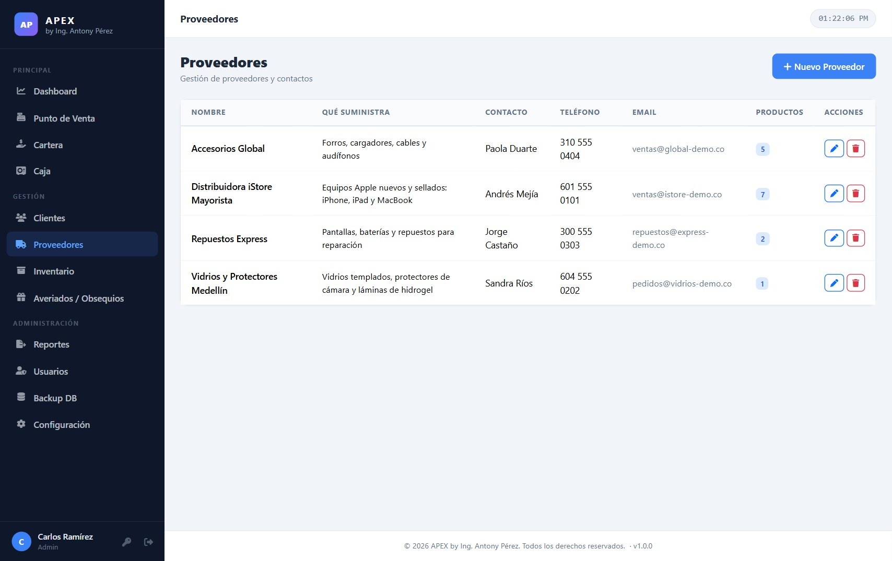
Proveedores con la columna «Qué suministra»
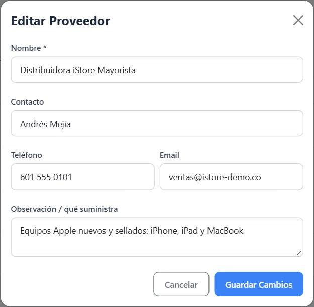
Editar proveedor
No se puede eliminar un proveedor que tenga productos asociados. Este módulo no es visible para los vendedores.
17.Inventario y categorías (administrador)
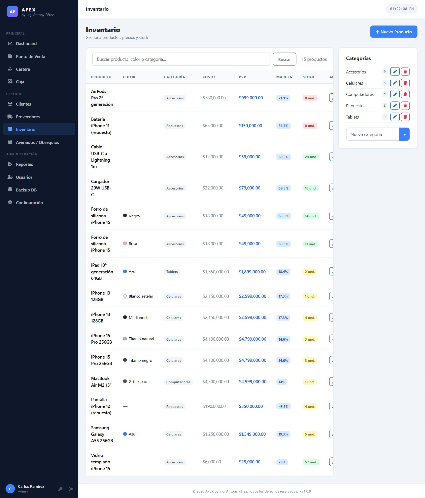
Inventario con categorías
Nuevo producto
Pulsa Nuevo Producto.
Escribe el nombre, elige categoría y proveedor, el costo y el precio de venta (PVP).
En Colores y stock inicial indica cada color con sus unidades; Agregar color añade filas. Cada color queda como un producto con su propio stock. Si el producto no maneja colores, deja una sola fila sin color.
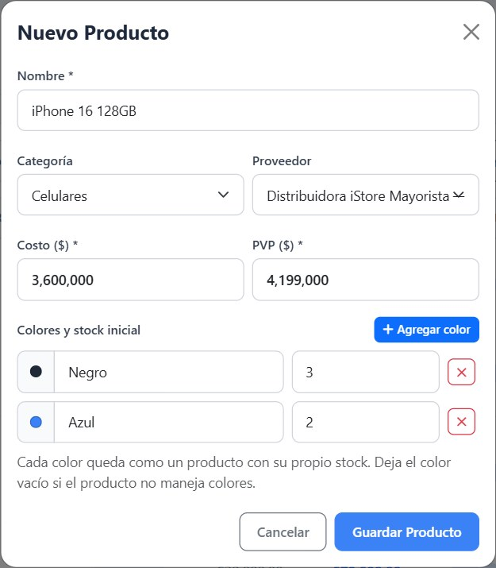
Producto en dos colores
Otras acciones
Lápiz: editar nombre, color, categoría, proveedor y precios.
+ (verde): agregar unidades al stock cuando llega mercancía.
Papelera: eliminar (solo si el producto nunca se vendió; si tiene historial, deja su stock en 0).
La columna Margen muestra la ganancia sobre el precio de venta.
Categorías
En el panel Categorías puedes crear categorías nuevas, renombrarlas (lápiz) y eliminarlas (papelera) para adaptarlas a tu negocio. Al eliminar una categoría sus productos no se borran: quedan «Sin categoría», y el aviso te dice cuántos son.
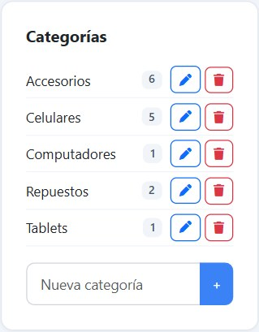
Panel de categorías
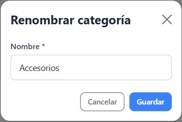
Renombrar categoría
18.Averiados y obsequios (administrador)
Registra salidas de inventario que no son ventas: productos dañados (averiados) o regalados fuera de una venta (obsequios). Elige el producto, el tipo, la cantidad y el motivo, y pulsa Registrar Salida. El stock se descuenta al instante.
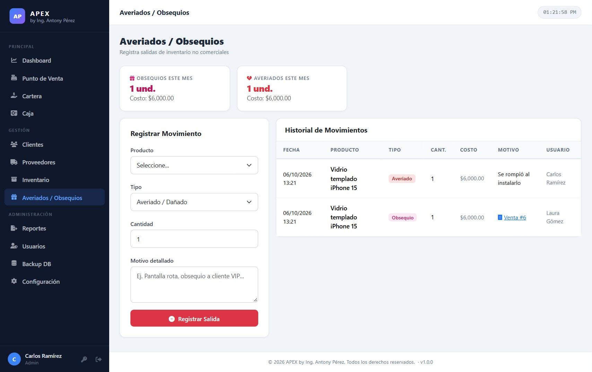
Averiados / Obsequios con el costo del mes
Los obsequios entregados dentro de una venta aparecen aquí automáticamente con un enlace al ticket.
19.Reportes (administrador)
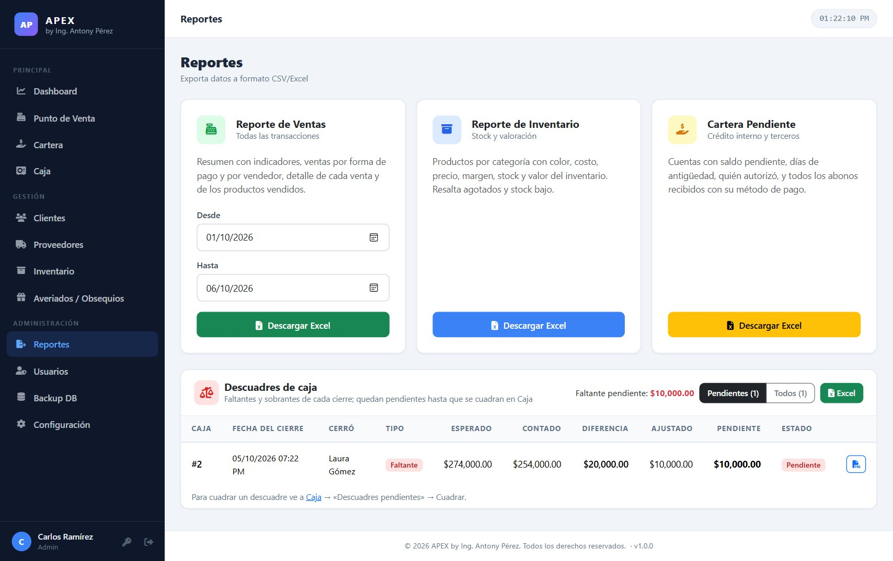
Módulo de Reportes
Reporte
Contenido
Ventas (Excel)
Indicadores, ventas por forma de pago y por vendedor, detalle de cada venta y productos vendidos, en el rango de fechas que elijas.
Inventario (Excel)
Productos por categoría con color, proveedor, costo, precio, margen, stock y valor del inventario.
Cartera pendiente (Excel)
Cuentas por cobrar con antigüedad, quién autorizó y todos sus abonos.
Descuadres de caja
En pantalla: pendientes o todos, con el total por reponer y el enlace al PDF de cada cierre. En Excel: hoja de descuadres y hoja de ajustes.
20.Usuarios y contraseñas (administrador)
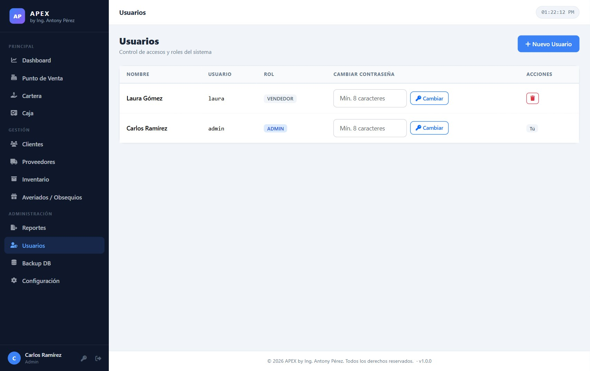
Usuarios del sistema
Nuevo Usuario: nombre, usuario (para ingresar), contraseña y rol.
Contraseñas de mínimo 8 caracteres. Usa una combinación de letras y números que no sea fácil de adivinar.
Para asignar una contraseña nueva a otro usuario escríbela en su fila y pulsa Cambiar. Cada persona puede cambiar la suya con el ícono de llave del menú.
No se puede eliminar la propia cuenta, ni un usuario con ventas, abonos o movimientos de caja. Para quitarle el acceso a alguien, cámbiale la contraseña.
Primera vezEl sistema se instala con los usuarios admin y vendedor y contraseñas iniciales conocidas. Al ingresar con ellas, APEX obliga a cambiarlas; Configuración muestra una alerta mientras algún usuario conserve la inicial.
21.Backup de la base de datos (administrador)
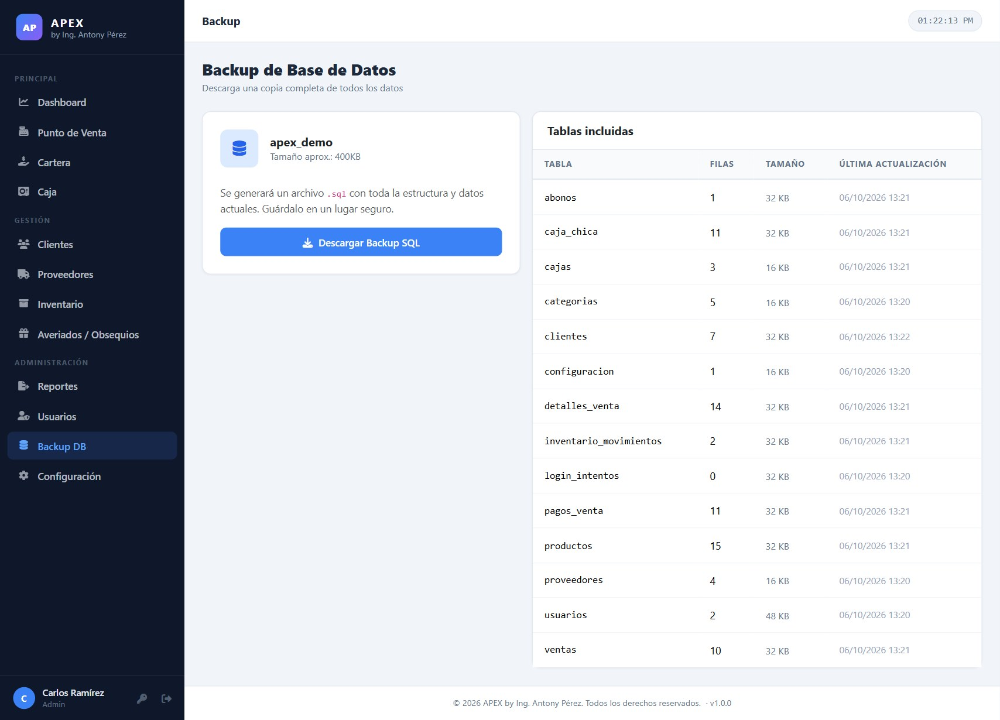
Backup
Pulsa Descargar Backup SQL para bajar una copia completa de la información (archivo backup_apex_AAAAMMDD_HHMMSS.sql). Guárdala fuera del computador (USB, Drive). Recomendado: una vez por semana y siempre antes de actualizar el sistema. La restauración se explica en el Manual de Instalación.
ConfidencialEl archivo de backup contiene toda la información del negocio. No lo compartas.
22.Configuración de la empresa (administrador)
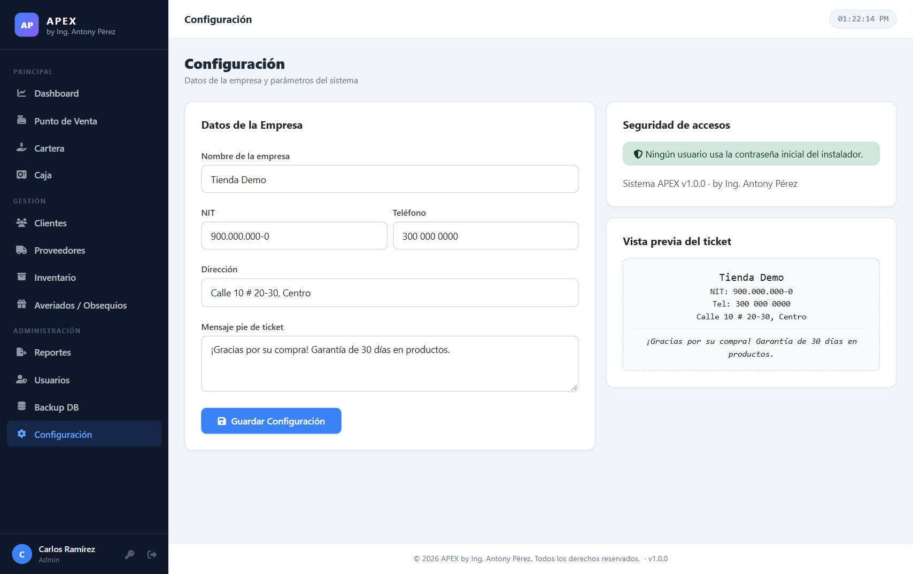
Configuración
Nombre de la empresa, NIT, teléfono, dirección y el mensaje del pie del ticket. Estos datos salen en los tickets, reportes de cierre y archivos Excel. El recuadro Seguridad de accesos avisa si algún usuario conserva la contraseña inicial.
23.Mensajes y confirmaciones
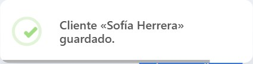
Aviso de acción exitosa (arriba a la derecha, desaparece solo)
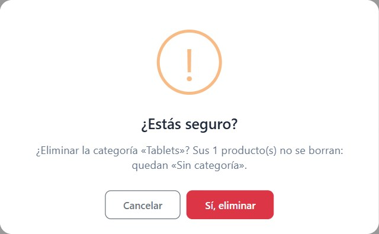
Confirmación antes de eliminar
Verde (arriba a la derecha): la acción se guardó.
Ventana roja «No se pudo completar»: explica qué falta corregir; no se guardó nada.
«¿Estás seguro?»: aparece antes de eliminar o cerrar la caja. Pulsa Cancelar si no estás seguro.
Los campos de dinero muestran el separador de miles mientras escribes (1,250,000); no escribas el signo $.
24.Preguntas frecuentes
No me deja cobrar: el botón Cobrar está gris.
La caja está cerrada. Ábrela desde el aviso del Punto de Venta o desde Caja.
¿Qué pasa si se me olvida cerrar la caja?
Nada se pierde: sigue abierta al día siguiente y todo lo nuevo se suma a ella. Ciérrala cuando cuentes el dinero; el reporte mostrará el período completo desde la apertura.
Al cerrar me sale faltante pero sé que el jefe sacó dinero.
Ese retiro debió registrarse como Egreso antes del cierre. Si ya cerraste, el administrador lo cuadra con un ajuste explicando el motivo (capítulo 14).
¿Por qué una venta a Addi no aparece en el efectivo?
Porque no es dinero recibido: queda en Cartera hasta que Addi consigne. Ese pago se registra como abono por Transferencia.
Un vendedor dejó de trabajar con nosotros.
Cámbiale la contraseña desde Usuarios: pierde el acceso de inmediato y se conserva todo su historial.
Me bloqueó el ingreso.
Después de 5 contraseñas erradas el acceso se bloquea 15 minutos. Espera y vuelve a intentarlo, o pide al administrador que te asigne una nueva contraseña.
Veo «Ocurrió un error».
Intenta de nuevo. Si se repite, avisa al administrador: el detalle técnico queda guardado en el registro de errores del sistema.